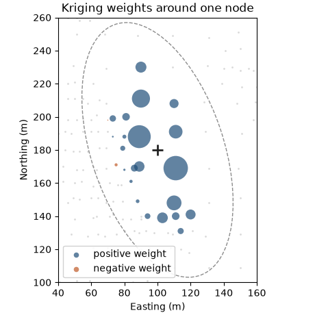
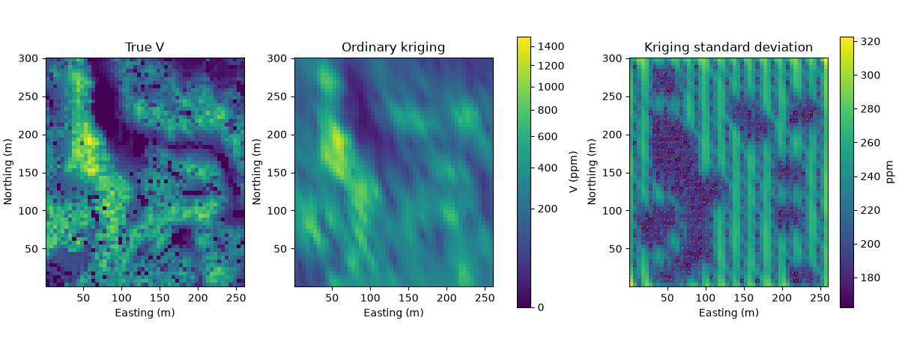
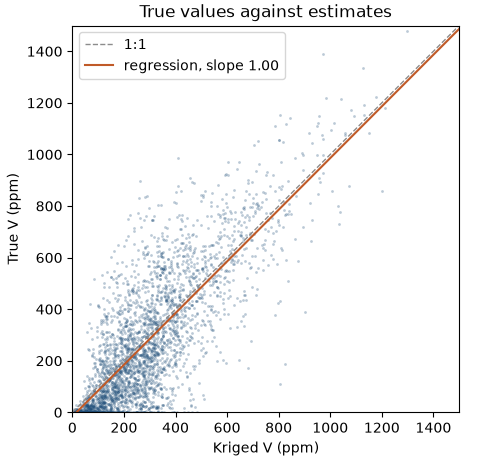

Note
Click here to download the full example code
Kriging¶
- 1. Samples and support
- 2. Describing data
- 3. Spatial continuity
- 4. Kriging
- 5. Simulation
- 6. Checking a model
You have samples at a few hundred locations and need a value at every node of a grid or every block of a mine plan. Kriging computes each unknown value as a weighted average of nearby samples, with weights taken from the variogram of chapter 3.
What you'll learn
- What makes a weighted average a good estimator, and how kriging differs from inverse distance.
- What ordinary kriging minimizes, and why its weights sum to one.
- How the screen and declustering effects shape the weights, and where negative weights come from.
- What the kriging variance measures and what it ignores.
- How the search neighborhood, point and block kriging, and smoothing affect the result.
Prerequisites: Describing data (mean, variance, declustering) and Spatial continuity (variogram, nugget, range, anisotropy).
import sys
from pathlib import Path
HERE = Path(__file__).parent if "__file__" in globals() else Path.cwd()
sys.path.insert(0, str(HERE.parents[1] / "examples"))
The estimation problem¶
Figure 1 shows the problem at one location of the Walker Lake area. Seven samples lie within 22 m of the target, with values from 3 to 317 ppm. A sensible estimate is a weighted average of them, so the question is how to choose the weights.
Two simple rules exist. Equal weights let a far sample count as much as a near one. Weights proportional to the inverse squared distance (inverse distance) favor near samples, but the rule sees only distances: it ignores the variogram and where the samples sit relative to each other.
The chapter uses the 470 Walker Lake samples and the anisotropic model fitted in chapter 3. The exhaustive data give the true value at every node, so you can check each claim against the truth. The last line of the cell describes the seven samples of Figure 1.
import boitata as bt
import matplotlib.pyplot as plt
import numpy as np
from common import ACCENT, GRAY, HIGHLIGHT, INK, LIGHT, map_axes, save
from matplotlib.colors import PowerNorm
from matplotlib.patches import Ellipse
samples = bt.datasets.walker_lake()
xy, v = samples.coords, samples["V"]
truth = bt.datasets.walker_lake_exhaustive()["V"].reshape(300, 260)
azimuths = np.arange(0, 180, 22.5)
directional = [bt.experimental_variogram(samples, "V", 10.0, 120.0, azimuth=a) for a in azimuths]
model = bt.Variogram.fit_directional(
directional, [(a, 0) for a in azimuths], ["spherical", "spherical"], weighting="count/gamma"
)
distance = np.hypot(*(xy[:, :2] - (100.0, 180.0)).T)
nearest = np.argsort(distance)[:7]
print(
f"seven nearest samples: {distance[nearest].max():.1f} m away at most, V from {v[nearest].min():.0f} to {v[nearest].max():.0f} ppm"
)
Out:
470/470 · 00:0078000/78000 · 00:00seven nearest samples: 21.5 m away at most, V from 3 to 317 ppm
What kriging optimizes¶
Kriging picks the weights that make the estimate:
- Unbiased: on average, the error (estimate minus truth) is zero.
- Best: among unbiased weighted averages, the one with the smallest error variance.
The variogram makes the second condition computable. It gives the expected squared difference between any two samples, and between each sample and the target, so you can write the error variance of any set of weights and minimize it before you know a single value.
Ordinary kriging assumes the mean is constant near the target but unknown. Unbiasedness then requires the weights to sum to one: if every sample value rose by 10 ppm, the estimate should rise by 10 ppm too. Minimizing the error variance under that constraint gives a small linear system with one equation per sample plus one for the constraint.
The math
For \(n\) samples, write \(\gamma_{ij}\) for the variogram between samples \(i\) and \(j\), and \(\gamma_{i0}\) for the variogram between sample \(i\) and the target. The weights \(\lambda_i\) and a Lagrange multiplier \(\mu\) solve
the estimate is \(z^* = \sum_i \lambda_i z_i\), and the kriging variance is \(\sigma^2_{K} = \sum_i \lambda_i \gamma_{i0} + \mu\). The last row is the constraint \(\sum_i \lambda_i = 1\). The left matrix depends only on the samples, the right side only on the target, and neither on the values.
Screening and declustering¶
Two layouts show what the system does that inverse distance cannot. The helper reads each weight from a fitted estimator: set one sample to 1 and the rest to 0, and the estimate equals that sample's weight. Both layouts use an isotropic spherical model with a 60 m range and no nugget.
def weights(estimator, coords, target):
"""Each sample's weight: the estimate when that sample is 1 and all others are 0."""
coords = np.asarray(coords, dtype=float)
unit = np.eye(len(coords))
target = np.atleast_2d(np.asarray(target, dtype=float))
return np.array([estimator.fit(coords, e).predict(target, progress=False)[0] for e in unit])
toy = bt.Variogram([("spherical", 1.0, 60.0)])
wide = bt.Search(radius=200, max_samples=24)
layouts = {
"screen": [(10, 0), (22, 0), (0, 16), (-14, -10)],
"cluster": [(-20, 0), (20, -6), (20, -2), (20, 2), (20, 6)],
}
for name, coords in layouts.items():
idw = weights(bt.InverseDistance(wide, power=2), coords, (0, 0))
ok = weights(bt.OrdinaryKriging(toy, wide), coords, (0, 0))
print(f"{name:>7} inverse distance {np.round(idw, 2)} sum {idw.sum():.2f}")
print(f"{'':>7} ordinary kriging {np.round(ok, 2)} sum {ok.sum():.2f}")
Out:
screen inverse distance [0.52 0.11 0.2 0.17] sum 1.00
ordinary kriging [ 0.54 -0.06 0.23 0.29] sum 1.00
cluster inverse distance [0.21 0.19 0.21 0.21 0.19] sum 1.00
ordinary kriging [0.46 0.19 0.08 0.08 0.19] sum 1.00
In the first layout, one sample sits 22 m east of the target, directly behind another at 10 m (Figure 2). Inverse distance gives it 0.11 from its distance alone. In kriging, the nearer sample already carries the information from that side, and the hidden one gets −0.06. This is the screen effect: a sample shields the samples behind it.
In the second layout, one sample lies 20 m west of the target and a cluster of four lies 20 m east (Figure 3). All five are about equally far, so inverse distance gives each about 0.2 and the cluster 0.8 in total. The four clustered samples repeat the same information, and kriging treats them almost as one: the lone sample gets 0.46 and the cluster 0.54. This is the declustering effect, the local version of the declustering weights of chapter 2.
Key idea
Kriging weights depend on distance to the target, on the variogram, and on the layout of the samples among themselves. That last part screens hidden samples and declusters redundant ones.
Negative weights come with the screen effect. They are legitimate, and small ones do no harm. Large negative weights on high values can push an estimate below zero. A limit on the number of samples (see the search section) and a nugget both reduce them.
Weights at a real node¶
Back to Walker Lake. A Search describes the neighborhood: an ellipse with an 80 m major radius along the
model's major axis, half as wide across it, and up to 24 samples. OrdinaryKriging(model, search) builds the
estimator, fit stores the samples and predict estimates at targets, the same fit-then-apply shape as the
transforms' fit/transform. The cell reads all 470 weights at the point (100, 180) m of Figure 1.
search = bt.Search(radius=80, max_samples=24, min_samples=4, rotation=model.rotation, ratios=(0.5, 1.0))
kriging = bt.OrdinaryKriging(model, search).fit(samples, "V")
target = (100.0, 180.0)
w = weights(bt.OrdinaryKriging(model, search), xy, target)
used = w != 0
estimate, variance = kriging.predict(np.array([target]), return_variance=True, progress=False)
print(
f"{used.sum()} samples used, weights sum to {w.sum():.4f}, {np.sum(w < 0)} negative (lowest {w.min():.3f})"
)
print(
f"sum of weight × value {w @ v:.1f} ppm; predict gives {estimate[0]:.1f} ppm, kriging variance {variance[0]:.0f}"
)
Out:
24 samples used, weights sum to 1.0000, 2 negative (lowest -0.003)
sum of weight × value 76.8 ppm; predict gives 76.8 ppm, kriging variance 72891
The search picks 24 samples and the weights sum to one, as the constraint demands. Two weights are negative, the
lowest −0.003, and the weighted sum of the values reproduces the estimate of 76.8 ppm. The next cell rebuilds the
system of the math box from model.gamma_between and solves it with NumPy. The weights agree to machine precision.
n = used.sum()
pts = xy[used]
system = np.ones((n + 1, n + 1))
system[n, n] = 0
system[:n, :n] = model.gamma_between(np.repeat(pts, n, axis=0), np.tile(pts, (n, 1))).reshape(n, n)
right = np.append(model.gamma_between(pts, np.tile([*target, 0.0], (n, 1))), 1.0)
solved = np.linalg.solve(system, right)
assert np.allclose(solved[:n], w[used], atol=1e-8)
print(f"largest difference from the matrix solution {np.abs(solved[:n] - w[used]).max():.1e}")
Out:
largest difference from the matrix solution 1.2e-15
fig, ax = plt.subplots(figsize=(4.6, 4.6), layout="constrained")
ax.scatter(*xy[~used, :2].T, s=4, color=LIGHT, linewidths=0)
for sign, color, label in ((1, ACCENT, "positive weight"), (-1, HIGHLIGHT, "negative weight")):
k = used & (np.sign(w) == sign)
ax.scatter(*xy[k, :2].T, s=3000 * np.abs(w[k]), color=color, alpha=0.7, linewidths=0, label=label)
ax.plot(*target, "+", color=INK, ms=12, mew=2)
ax.add_patch(Ellipse(target, 160, 80, angle=90 - model.rotation[0], fill=False, color=GRAY, lw=1, ls="--"))
ax.set(xlim=(target[0] - 60, target[0] + 60), ylim=(target[1] - 80, target[1] + 80))
map_axes(ax, "Kriging weights around one node")
legend = ax.legend(loc="lower left", framealpha=0.9, frameon=True)
for handle in legend.legend_handles:
handle.set_sizes([30])
save(fig, "weights")

The largest weights sit along the major axis, north and south of the target, where the variogram keeps samples alike over long distances. The tight group west of the target shares little weight among its members: the declustering effect again.
A whole grid¶
predict also accepts a BlockModel and returns one value per cell. with_column returns a new block model with
the values attached. The cell kriges a 5 m grid, runs inverse distance through the same search and compares both
with the truth at the nodes.
grid = bt.BlockModel(origin=(0.5, 0.5), size=(5, 5), count=(52, 60))
nodes = grid.centroids.astype(int)
true_at_nodes = truth[nodes[:, 1] - 1, nodes[:, 0] - 1]
estimate, variance = kriging.predict(grid, return_variance=True)
inverse = bt.InverseDistance(search, power=2).fit(samples, "V").predict(grid)
grid = grid.with_column("ok", estimate).with_column("ok_variance", variance).with_column("idw", inverse)
print(grid)
for name in ("ok", "idw"):
e = grid[name]
print(
f"{name:>3}: RMSE {np.sqrt(np.nanmean((e - true_at_nodes) ** 2)):.1f} ppm, "
f"variance of estimates {np.nanvar(e):.0f} (true {true_at_nodes.var():.0f})"
)
Out:
3120/3120 · 00:003120/3120 · 00:00BlockModel(regular, 3120 of 3120 cells, count [52, 60, 1], size [5.0, 5.0, 1.0], rotation [0.0, 0.0, 0.0])
ok: Float64
ok_variance: Float64
idw: Float64
ok: RMSE 155.1 ppm, variance of estimates 38359 (true 62312)
idw: RMSE 166.2 ppm, variance of estimates 34341 (true 62312)
Kriging misses the truth by 155.1 ppm on average (root mean squared error), inverse distance by 166.2 ppm. The difference is modest because both use the same anisotropic search. Both sets of estimates also vary less than the truth (see the last section).
The kriging variance¶
Kriging returns an error variance with every estimate (return_variance=True). Its formula in the math box holds
only variogram values: it depends on the model and on the geometry of samples and target, never on the sample
values. The cell replaces V by random numbers and gets the same variances. It also compares the kriging standard
deviation with the actual error at each node.
noise = np.random.default_rng(0).normal(size=len(v))
_, other = bt.OrdinaryKriging(model, search).fit(xy, noise).predict(grid, return_variance=True)
print(f"same variance with random values in place of V: {np.allclose(other, variance)}")
error = np.abs(estimate - true_at_nodes)
print(
f"correlation of kriging standard deviation with absolute error {np.corrcoef(np.sqrt(variance), error)[0, 1]:.2f}"
)
shape, extent = (60, 52), (0.5, 260.5, 0.5, 300.5)
fig, axes = plt.subplots(1, 3, figsize=(12, 4.6), layout="constrained")
norm = PowerNorm(0.5, vmin=0, vmax=1500)
for ax, image, title in ((axes[0], true_at_nodes, "True V"), (axes[1], estimate, "Ordinary kriging")):
im = ax.imshow(image.reshape(shape), origin="lower", extent=extent, norm=norm)
map_axes(ax, title)
fig.colorbar(im, ax=axes[:2], shrink=0.8, label="V (ppm)")
sd = axes[2].imshow(np.sqrt(variance).reshape(shape), origin="lower", extent=extent)
axes[2].scatter(*xy[:, :2].T, s=2, color=HIGHLIGHT, linewidths=0)
map_axes(axes[2], "Kriging standard deviation")
fig.colorbar(sd, ax=axes[2], shrink=0.8, label="ppm")
save(fig, "maps")

Out:
3120/3120 · 00:00same variance with random values in place of V: True
correlation of kriging standard deviation with absolute error -0.01
The standard deviation map follows the sampling: low in the infill clusters, high between sample lines and at the
edges. Its correlation with the actual error is −0.01. The Walker Lake survey sampled most densely where V is high
and erratic, so the nodes with the lowest kriging variance are among the hardest to estimate. The variance cannot
know that.
Pitfall: reading the kriging variance as a local error bar
The kriging variance ranks data configurations from well informed to poorly informed. It does not see that a high-grade zone varies more than a low-grade one. For local uncertainty that depends on the values, use simulation (chapter 5).
The search neighborhood¶
Kriging every node with every sample would be slow and would put small, unstable weights on distant samples. The
Search value object limits each node to a neighborhood (Figure 4):
radius,rotationandratiosdefine an ellipse, usually aligned with the variogram's anisotropy;max_samplesandmin_samplesbound the count; nodes with fewer thanmin_samplesstay unestimated (NaN);octant=Truesplits the ellipse into sectors along its axes and takes at mostmax_samples / 8from each (quadrants andmax_samples / 4in 2D), so a dense cluster on one side cannot fill the neighborhood.
A search is plain data: it holds no samples, serializes to JSON and can serve several estimators. The cell varies
max_samples and measures the variance of the estimates and the slope of regression of the true values on the
estimates. A slope of 1 means an estimate of 500 ppm is right on average. Below 1, high estimates are too high and
low ones too low.
def slope(estimate):
"""Slope of the regression of the true values on the estimates; 1 means no conditional bias."""
return np.polyfit(estimate, true_at_nodes, 1)[0]
print(" max samples variance of estimates slope RMSE")
for m in (4, 8, 24, 48):
s = bt.Search(radius=80, max_samples=m, min_samples=min(m, 4), rotation=model.rotation, ratios=(0.5, 1.0))
e = kriging.with_search(s).predict(grid, progress=False)
rmse = np.sqrt(np.mean((e - true_at_nodes) ** 2))
print(f"{m:12d} {e.var():21.0f} {slope(e):5.2f} {rmse:5.1f}")
Out:
max samples variance of estimates slope RMSE
4 44123 0.93 155.7
8 40246 0.98 154.7
24 38359 1.00 155.1
48 38306 1.00 154.8
With 4 samples the estimates vary more (44 123 ppm²), but the slope is 0.93: high estimates overshoot. From 24 samples on, the slope reaches 1.00 and the variance of the estimates settles near 38 300. The RMSE stays between 154.7 and 155.7 ppm across the four searches. A small search keeps more of the variability, and a larger one removes conditional bias. That trade-off drives the choice of search; search explores it further.
Points and blocks¶
So far each target was a point. Mining selects blocks, and the grade of a 10 × 10 m block is the average of the
grades inside it. Block kriging estimates that average directly: BlockKriging averages the variogram between
each sample and a grid of points that discretizes the block. Its kriging variance is smaller, because the average
over a block is easier to predict than the value at one point in it.
blocks = bt.BlockModel(origin=(0, 0), size=(10, 10), count=(26, 30))
true_blocks = truth.reshape(30, 10, 26, 10).mean(axis=(1, 3)).ravel()
block = bt.BlockKriging(model, search, size=(10, 10), discretization=(5, 5, 1)).fit(samples, "V")
block_estimate, block_variance = block.predict(blocks, return_variance=True, progress=False)
point_estimate, point_variance = kriging.predict(blocks, return_variance=True, progress=False)
for name, e, var in (("point", point_estimate, point_variance), ("block", block_estimate, block_variance)):
rmse = np.sqrt(np.mean((e - true_blocks) ** 2))
print(f"{name} kriging of 10 m blocks: RMSE {rmse:.1f} ppm, mean kriging variance {var.mean():.0f}")
Out:
point kriging of 10 m blocks: RMSE 105.8 ppm, mean kriging variance 54073
block kriging of 10 m blocks: RMSE 101.5 ppm, mean kriging variance 19404
Against the true block averages, block kriging is more accurate (101.5 against 105.8 ppm), and its mean kriging variance, 19 404, is about a third of the point value, 54 073. Chapter 1's point on support applies to estimates too: state the support you estimate.
Smoothing and conditional bias¶
A weighted average cannot swing as wide as the values it averages, so kriged maps are smoother than reality. Here the estimates have a variance of 38 359 ppm² against 62 312 for the truth at the nodes. Figure 5 shows the effect along one line: the kriged profile follows the trend and misses the peaks and troughs.
Smoothing and conditional bias are separate properties. The next figure plots the true value against the estimate at every node. With a slope of one, nodes estimated at 500 ppm average 500 ppm in truth, so selection on the estimates is fair.
fig, ax = plt.subplots(figsize=(4.8, 4.6), layout="constrained")
ax.scatter(estimate, true_at_nodes, s=4, color=ACCENT, alpha=0.3, linewidths=0)
x = np.array([0, 1500])
fit = np.polyfit(estimate, true_at_nodes, 1)
ax.plot(x, x, color=GRAY, lw=1, ls="--", label="1:1")
ax.plot(x, np.polyval(fit, x), color=HIGHLIGHT, lw=1.5, label=f"regression, slope {fit[0]:.2f}")
ax.set(xlim=(0, 1500), ylim=(0, 1500), xlabel="Kriged V (ppm)", ylabel="True V (ppm)")
ax.set_aspect("equal")
ax.set_title("True values against estimates")
ax.legend(loc="upper left")
save(fig, "slope")
d = kriging.predict(grid, diagnostics=True, progress=False)
print(
f"slope from the estimates {fit[0]:.2f}; mean slope the model predicts per node {np.mean(d['slope']):.2f}"
)

Out:
slope from the estimates 1.00; mean slope the model predicts per node 0.96
The measured slope is 1.00, and predict(..., diagnostics=True) reports the slope the model expects at each node,
0.96 on average, without seeing the truth. Kriging with a good neighborhood is conditionally unbiased, and you pay
for it with smoothing: the right average at each node, too few extreme values across the map. A tonnage above a
high cutoff read from these estimates would be too low. Chapter 5 restores the
variability with simulation, and chapter 6 checks both properties on a
finished model without the truth.
Check before you move on
- Why do ordinary kriging weights sum to one?
- Name two things kriging uses to set weights that inverse distance ignores.
- Why does the kriging variance not change when you replace the sample values?
- What does a slope of regression below one tell you about high estimates?
- Why is a block kriging variance smaller than a point kriging variance at the block center?
See also
- Examples: ordinary kriging, simple estimators, block kriging, search, search calibration.
- API:
Search,OrdinaryKriging,BlockKriging,BlockModel.
Next: Simulation draws many equally likely maps that keep the variability kriging smooths away.
Total running time of the script: ( 0 minutes 1.281 seconds)
Download Python source code: learn_04.py